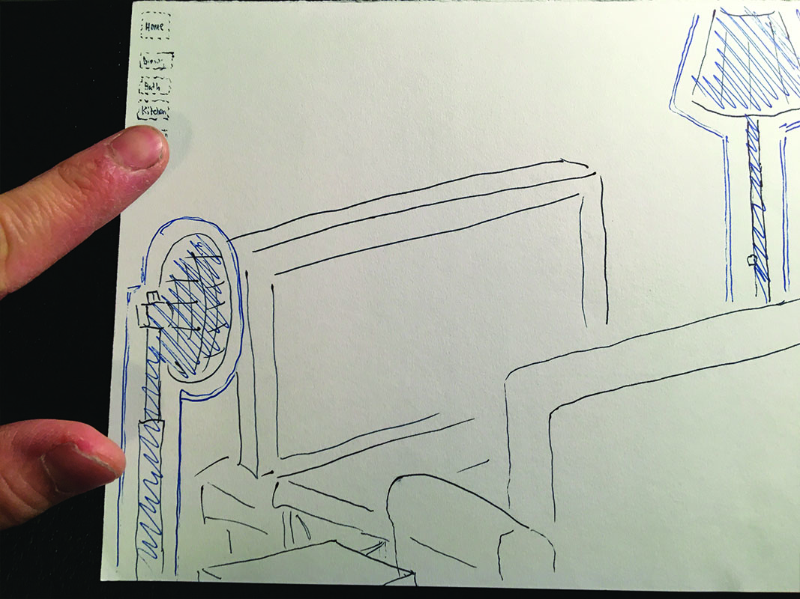
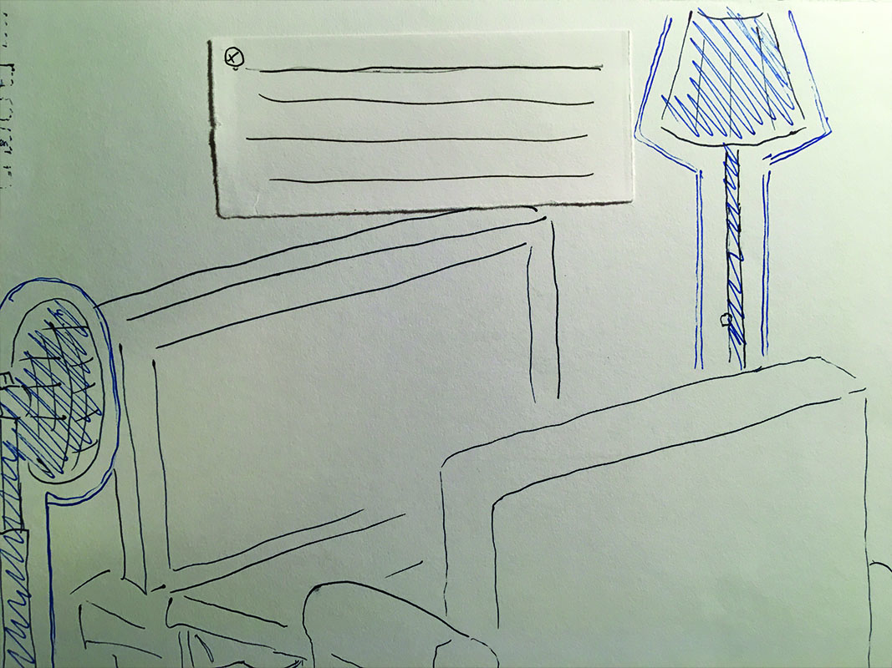
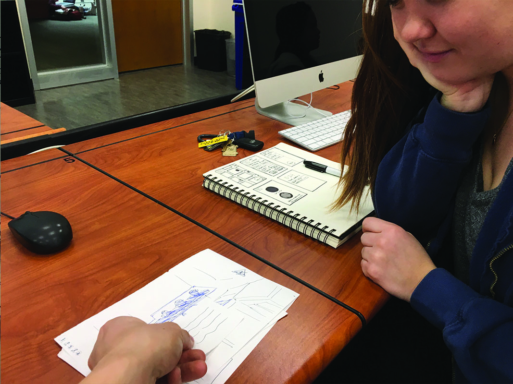
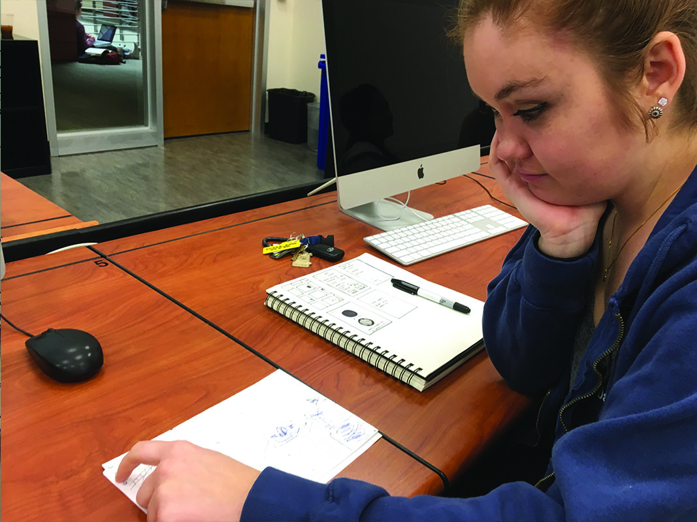

Non-user testing 1 of 3: Home screen of project shows overhead view of entire house.
Non-user testing 2 of 3: Sample of living room.
Non-user testing 3 of 3: Living room sample with interaction of information blurb.
User testing 1 of 3: Home screen once again. It took the user between 5 and 10 seconds to know to select a room to begin. Consider adding textual instrucitons?
Non-user testing 2 of 3: The living room. Blue highlights made it more obvious that the object was interactive. Will add animations in actual code.
Non-user testing 3 of 3: Each room will give side option to allow user to go to any room in the house or home screen to maximize agency. From there the user picked up all the functions of the site very quickly.